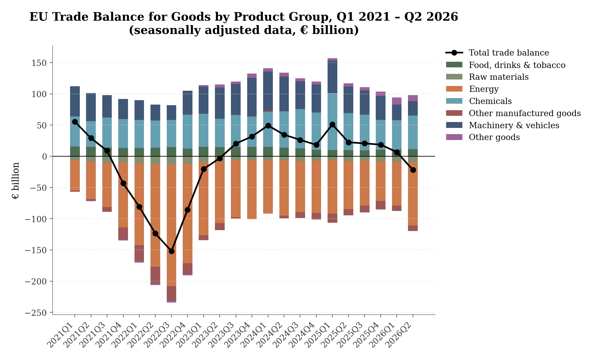
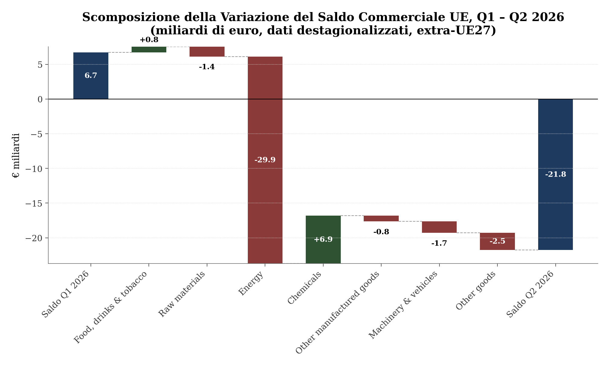
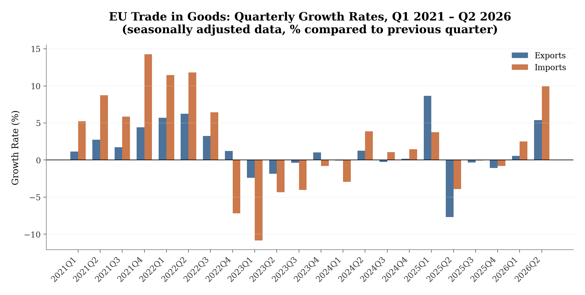
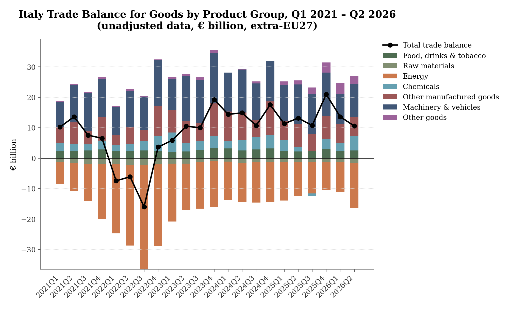
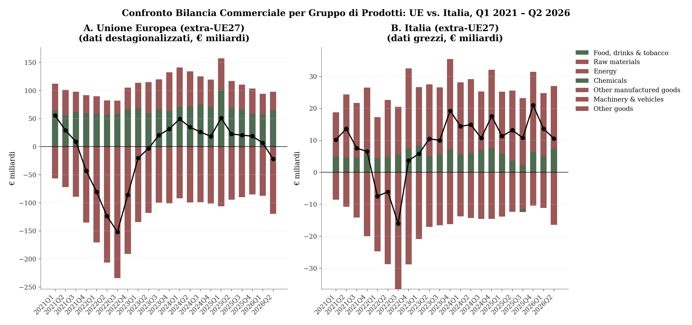

Il ritorno al deficit commerciale dell’Unione europea nel Q2 2026
Analisi congiunturale del commercio extra-UE di beni per gruppo di prodotti
Paolo Volterra ![]()
Nel secondo trimestre del 2026, la bilancia commerciale extra-UE di beni dell’Unione europea ha registrato un disavanzo di 21,8 miliardi di euro, interrompendo una serie di undici trimestri consecutivi in avanzo iniziata nel terzo trimestre del 2023. Il deficit è stato determinato da un’accelerazione delle importazioni (+9,9% rispetto al trimestre precedente), più intensa della crescita delle esportazioni (+5,4%). L’analisi settoriale evidenzia come la causa principale dell’inversione di rotta sia il sensibile ampliamento del disavanzo nei prodotti energetici, passato da 71,3 a 101,1 miliardi di euro, parzialmente compensato dall’incremento del surplus nei settori della chimica e dell’alimentare.
commercio estero, unione europea, bilancia commerciale, importazioni, esportazioni, energia
Versione citabile su Zenodo, con il PDF: doi.org/10.5281/zenodo.22106198.
1 Introduzione
Nel secondo trimestre del 2026, la bilancia commerciale dei beni dell’Unione europea (extra-UE27) ha registrato il primo saldo negativo dopo undici trimestri consecutivi in avanzo. Il deficit commerciale, pari a 21,8 miliardi di euro, segna un’inversione di rotta rispetto al saldo positivo di 6,7 miliardi di euro registrato nel primo trimestre dell’anno.
L’ultima serie di disavanzi commerciali nell’Unione si era conclusa nel secondo trimestre del 2023, dopo una fase critica durata quasi due anni (dalla fine del 2021 a metà del 2023) caratterizzata dal forte aumento dei costi energetici globali.
Questo rapporto analizza l’andamento congiunturale delle importazioni e delle esportazioni e la scomposizione settoriale dei saldi per identificare i fattori che hanno guidato questa transizione.
2 Bilancia commerciale per gruppo di prodotti
La scomposizione del saldo commerciale per categorie merceologiche, classificate secondo la classificazione SITC (Standard International Trade Classification), evidenzia come il peggioramento della bilancia commerciale sia da attribuirsi principalmente alla dinamica dei prodotti energetici e delle materie prime.
Il grafico seguente mostra l’andamento dei saldi commerciali trimestrali dal primo trimestre del 2021 al secondo trimestre del 2026 per ciascun gruppo di prodotti, sovrapposto al saldo totale (linea nera).

Figura 1: Bilancia commerciale dell’Unione Europea per gruppo di prodotti, Q1 2021 – Q2 2026 (€ miliardi, dati destagionalizzati)
Come si può notare dalla Figura 1, il disavanzo strutturale nei prodotti energetici (SITC 3) si è bruscamente ampliato nel secondo trimestre del 2026, superando i 100 miliardi di euro in un singolo trimestre per la prima volta da metà 2023.
La tabella seguente riporta i valori assoluti delle importazioni, esportazioni e dei saldi per i due trimestri più recenti:
| Gruppo di Prodotti (Codice SITC) | Flusso | Q1 2026 (€ mld) | Q2 2026 (€ mld) | Variazione Assoluta (€ mld) | Saldo Q1 2026 (€ mld) | Saldo Q2 2026 (€ mld) | Variazione Saldo (€ mld) |
|---|---|---|---|---|---|---|---|
| Alimentari, bevande e tabacco (SITC 0_1) | EXP IMP |
52,68 41,99 |
54,11 42,59 |
+1,43 +0,60 |
+10,68 | +11,52 | +0,83 |
| Materie prime (SITC 2_4) | EXP IMP |
17,84 25,77 |
19,03 28,41 |
+1,19 +2,63 |
-7,94 | -9,38 | -1,44 |
| Prodotti energetici (SITC 3) | EXP IMP |
30,76 102,03 |
38,64 139,78 |
+7,89 +37,75 |
-71,27 | -101,14 | -29,86 |
| Prodotti chimici (SITC 5) | EXP IMP |
128,29 81,19 |
139,00 84,98 |
+10,71 +3,79 |
+47,10 | +54,02 | +6,92 |
| Altri manufatti (SITC 6_8) | EXP IMP |
138,89 147,14 |
142,80 151,88 |
+3,91 +4,74 |
-8,25 | -9,09 | -0,84 |
| Macchinari e veicoli (SITC 7) | EXP IMP |
254,13 229,28 |
266,81 243,61 |
+12,67 +14,33 |
+24,86 | +23,20 | -1,66 |
| Altre merci (SITC 9) | EXP IMP |
22,60 11,02 |
19,65 10,54 |
-2,95 -0,48 |
+11,57 | +9,11 | -2,46 |
| TOTALE | EXP IMP |
645,18 638,43 |
680,03 701,79 |
+34,85 +63,36 |
+6,74 | -21,76 | -28,50 |
2.1 Analisi delle componenti merceologiche
- La componente energetica: L’allargamento del deficit energetico è stato il principale fattore del passaggio a un deficit aggregato. Le importazioni di prodotti energetici sono aumentate da 102,0 miliardi di euro nel Q1 a 139,8 miliardi nel Q2 (+37,0%); anche le esportazioni sono cresciute sensibilmente (+7,9 miliardi, pari al +25,6%), ma molto meno delle importazioni in valore assoluto. Questo ha generato un aumento netto del deficit energetico di 29,9 miliardi di euro (da -71,3 a -101,1 miliardi).
- Macchinari e trasporti: Il saldo attivo del settore macchinari e veicoli, una delle principali voci di surplus dell’UE, ha registrato un leggero arretramento di 1,7 miliardi di euro (scendendo a 23,2 miliardi), poiché la crescita delle importazioni (+14,3 miliardi) ha superato l’aumento delle esportazioni (+12,7 miliardi).
- La chimica come contrappeso: Il surplus sui prodotti chimici (inclusi i farmaceutici e le materie plastiche) è cresciuto di 6,9 miliardi di euro, fino a raggiungere 54,0 miliardi, grazie all’aumento delle esportazioni a 139,0 miliardi di euro.
- Alimentari e bevande: L’avanzo del settore agroalimentare è cresciuto a 11,5 miliardi di euro (+0,8 miliardi rispetto al trimestre precedente), confermandosi come un’area di stabile avanzo commerciale per l’Unione.
2.2 Scomposizione del cambiamento: analisi waterfall
Per comprendere appieno la transizione dal surplus di 6,7 miliardi di euro nel Q1 2026 al deficit di 21,8 miliardi di euro nel Q2 2026, è possibile scomporre la variazione complessiva del saldo (pari a -28,5 miliardi di euro) per categoria merceologica.
Il grafico waterfall seguente illustra i contributi netti di ciascun gruppo di prodotti al deterioramento della bilancia commerciale. I contributi positivi indicano un miglioramento del saldo settoriale, mentre quelli negativi indicano un peggioramento.

Figura 2: Scomposizione della variazione del saldo commerciale UE, Q1 – Q2 2026 (€ miliardi, dati destagionalizzati, extra-UE27)
Come evidenziato dalla Figura 2: - Il peggioramento è dominato in modo schiacciante dal comparto Energetico (SITC 3), che da solo ha sottratto 29,9 miliardi di euro al saldo trimestrale. - Ulteriori piccoli contributi negativi sono giunti dalle Altre merci (SITC 9) con -2,5 miliardi, dai Macchinari e veicoli (SITC 7) con -1,7 miliardi, e dalle Materie prime (SITC 2_4) con -1,4 miliardi. - Al contrario, il settore Chimico (SITC 5) ha fornito un parziale controbilanciamento positivo, migliorando il proprio saldo di 6,9 miliardi di euro, affiancato dal settore Alimentare (SITC 0_1) (+0,8 miliardi).
3 Analisi dei tassi di crescita congiunturali
Il ritorno al deficit non riflette una contrazione degli scambi, bensì un’intensa ripresa del commercio internazionale di beni che ha visto le importazioni crescere a ritmi doppi rispetto alle esportazioni.
Il grafico seguente mostra i tassi di variazione percentuale delle esportazioni e delle importazioni rispetto al trimestre precedente.

Figura 3: Tassi di crescita trimestrali di esportazioni e importazioni dell’Unione Europea, Q1 2021 – Q2 2026 (% congiunturale, dati destagionalizzati)
Nel secondo trimestre del 2026: - Le esportazioni sono aumentate del 5,4% (+34,9 miliardi di euro in valore assoluto) rispetto al Q1 2026. - Le importazioni sono aumentate del 9,9% (+63,4 miliardi di euro in valore assoluto).
3.1 Contesto e dinamica dei flussi
La forte crescita del secondo trimestre del 2026 segna una netta rottura rispetto alla tendenza osservata nel 2025. Da metà 2025 alla fine dell’anno, infatti, sia le esportazioni che le importazioni avevano subito una contrazione consecutiva per tre trimestri, in parte imputabile alle tensioni commerciali e tariffarie internazionali: - Nel secondo trimestre del 2025, le esportazioni erano calate del -7,7% e le importazioni del -3,9%. - Questa tendenza calante si è arrestata nel primo trimestre del 2026, che ha registrato una prima stabilizzazione con un timido rimbalzo (+0,6% per l’export e +2,5% per l’import). - Nel secondo trimestre del 2026, il commercio extra-UE di beni ha registrato una decisa accelerazione in valore. Gli indicatori disponibili suggeriscono anche una ripresa più moderata dei volumi, accompagnata da un deterioramento del saldo commerciale dovuto soprattutto all’aumento del valore dell’energia importata.
3.2 Dinamica di prezzi e volumi: il ruolo dell’inflazione energetica
Per verificare se la decisa crescita del valore degli scambi nel Q2 2026 rifletta un aumento effettivo dei volumi o sia piuttosto l’effetto di variazioni dei prezzi, si possono esaminare gli indici Eurostat dei Valori Medi Unitari (IVU) (come proxy dei prezzi) e dei Volumi (IVOL_SCA).
Poiché i dati degli indici per giugno 2026 non sono ancora stati integralmente pubblicati, i valori attribuiti al secondo trimestre 2026 rappresentano la media dei soli mesi di aprile e maggio. Il confronto con i valori nominali, che coprono invece l’intero trimestre, deve quindi essere considerato preliminare e indicativo: non costituisce una decomposizione contabile esatta della variazione degli scambi tra prezzi e quantità.
La tabella seguente confronta le variazioni dei valori nominali con quelle dei prezzi e dei volumi per il totale degli scambi e per il comparto dell’energia:
| Ambito | Variabile | Valore Q1 2026 (2021=100) | Valore Q2 2026 (2021=100) | Variazione Congiunturale (%) |
|---|---|---|---|---|
| Totale Importazioni | Valore (€ mld) Prezzo (IVU) Volume (IVOL_SCA) |
638,43 118,47 103,77 |
701,79 127,60 106,10 |
+9,92% +7,71% +2,25% |
| Totale Esportazioni | Valore (€ mld) Prezzo (IVU) Volume (IVOL_SCA) |
645,18 130,50 92,57 |
680,03 134,25 94,70 |
+5,40% +2,87% +2,30% |
| Importazioni Energia | Valore (€ mld) Prezzo (IVU) Volume (IVOL_SCA) |
102,03 107,70 126,03 |
139,78 155,05 128,45 |
+37,00% +43,96% +1,92% |
| Esportazioni Energia | Valore (€ mld) Prezzo (IVU) Volume (IVOL_SCA) |
30,76 123,90 110,80 |
38,64 167,35 112,00 |
+25,62% +35,07% +1,08% |
Pur con questo limite di confrontabilità, gli indicatori suggeriscono il seguente quadro:
- La fattura delle importazioni: La crescita del valore totale delle importazioni (+9,9%) si associa a un aumento dei valori medi unitari (+7,7%) più ampio di quello dell’indice dei volumi (+2,2%).
- Lo shock energetico: Nel comparto dell’energia (SITC 3), l’aumento del valore delle importazioni (+37,0%) si accompagna a una crescita molto marcata dei valori medi unitari (+44,0%), mentre l’indice dei volumi aumenta del +1,9%. La diversa copertura temporale e le proprietà degli indici non consentono tuttavia di riconciliare aritmeticamente queste variazioni.
- Le esportazioni: Le esportazioni totali dell’UE in valore sono cresciute del +5,4%; gli indicatori parziali mostrano aumenti sia dei valori medi unitari (+2,9%) sia dei volumi (+2,3%).
4 Confronto storico con i trimestri Q2 precedenti
Per inserire il risultato del secondo trimestre del 2026 in una prospettiva di medio termine, è utile confrontare i dati recenti con l’andamento registrato nei secondi trimestri (Q2) degli anni precedenti a partire dal 2021.
La tabella seguente mostra l’evoluzione storica delle esportazioni, importazioni, del saldo commerciale totale extra-UE27 e dei relativi tassi di crescita congiunturali (T/T-1) e tendenziali (T/T-4) per il trimestre Q2:
| Trimestre | EXP (€ mld) | IMP (€ mld) | Saldo (€ mld) | Cong. EXP | Cong. IMP | Tend. EXP | Tend. IMP |
|---|---|---|---|---|---|---|---|
| 2021Q2 | 533,40 | 504,26 | +29,14 | +2,75% | +8,75% | +30,98% | +31,03% |
| 2022Q2 | 636,45 | 760,13 | -123,68 | +6,23% | +11,82% | +19,32% | +50,74% |
| 2023Q2 | 637,31 | 640,40 | -3,09 | -1,85% | -4,35% | +0,14% | -15,75% |
| 2024Q2 | 649,38 | 614,78 | +34,60 | +1,28% | +3,88% | +1,89% | -4,00% |
| 2025Q2 | 650,74 | 628,24 | +22,50 | -7,68% | -3,92% | +0,21% | +2,19% |
| 2026Q2 | 680,03 | 701,79 | -21,76 | +5,40% | +9,92% | +4,50% | +11,71% |
Dall’analisi storica emergono elementi di grande interesse: - Eccezionalità del deficit: Il disavanzo di 21,8 miliardi di euro registrato nel Q2 2026 rappresenta solo il secondo saldo negativo in un secondo trimestre dal 2021. L’altro disavanzo, molto più grave (-123,7 miliardi), si verificò nel Q2 2022, al culmine della crisi energetica seguita all’invasione dell’Ucraina. - Dinamica tendenziale: Su base annua (rispetto al Q2 2025), le importazioni dell’Unione sono cresciute del +11,7%, un’accelerazione significativa rispetto al modesto +2,2% registrato nel Q2 2025. Le esportazioni hanno registrato una crescita tendenziale più contenuta, pari al +4,5%. - Inversione congiunturale: La crescita congiunturale delle importazioni (+9,9% nel Q2 2026) rappresenta la variazione trimestrale più alta dal Q2 2022 (+11,8%), confermando la rapidità del recente deterioramento del saldo commerciale.
5 Focus Italia
L’analisi del commercio internazionale dell’Italia con i mercati extra-UE (basata sul dataset Eurostat ds-059331) rivela un’importante divergenza rispetto alla dinamica aggregata europea. A differenza dell’Unione Europea nel suo complesso, che nel secondo trimestre del 2026 è scivolata in un deficit di 21,8 miliardi di euro, l’Italia ha mantenuto un saldo positivo, registrando un surplus commerciale di 10,6 miliardi di euro.
Il grafico seguente illustra la composizione settoriale della bilancia commerciale extra-UE dell’Italia (extra-UE27, dati grezzi).
I dati italiani non sono destagionalizzati, mentre quelli aggregati dell’UE utilizzati nelle sezioni precedenti lo sono. Il confronto tra i due andamenti descrive pertanto differenze di livello e di struttura settoriale, ma le variazioni congiunturali Q1–Q2 non sono perfettamente omogenee.

Figura 4: Bilancia commerciale dell’Italia per gruppo di prodotti, Q1 2021 – Q2 2026 (€ miliardi, extra-UE27)
Per un confronto descrittivo, la figura seguente affianca l’andamento dei saldi commerciali trimestrali dell’Unione europea e dell’Italia per ciascun gruppo di prodotti:

Figura 5: Confronto bilancia commerciale per gruppo di prodotti: UE vs. Italia, Q1 2021 – Q2 2026 (€ miliardi)
Sebbene l’avanzo italiano sia in lieve contrazione rispetto al primo trimestre del 2026 (+13,6 miliardi di euro), la struttura commerciale del Paese mostra una notevole solidità strutturale se confrontata con la dinamica aggregata dell’Unione (vedi Figura 4 e Figura 5):
- La fattura energetica: Analogamente all’UE, il principale elemento di peggioramento è stato il deficit nel settore dell’energia (SITC 3), che per l’Italia è aumentato di 4,9 miliardi di euro, passando da -9,8 miliardi (Q1 2026) a -14,8 miliardi (Q2 2026).
- Resilienza della meccanica: Mentre l’UE-27 ha registrato una riduzione del suo avanzo in macchinari e veicoli (SITC 7), l’Italia ha visto il suo surplus in questo comparto crescere di 1,0 miliardi di euro, salendo a +10,9 miliardi di euro nel Q2 2026. Ciò evidenzia la forza dell’export di macchinari strumentali ed equipaggiamenti industriali italiani nei mercati internazionali extra-UE.
- Chimica e farmaceutica (SITC 5): L’avanzo in questo settore è quasi raddoppiato, passando da +2,8 miliardi di euro a +4,8 miliardi di euro (+2,0 miliardi), confermando l’ottima performance dell’export chimico e farmaceutico nazionale.
- Agroalimentare (SITC 0_1): Il saldo commerciale del comparto alimentare e bevande è salito a +2,6 miliardi di euro (+0,3 miliardi), in linea con la costante espansione del brand “Made in Italy”.
6 Conclusioni
Il passaggio dell’Unione Europea a un deficit commerciale di 21,8 miliardi di euro nel secondo trimestre del 2026 rappresenta un segnale macroeconomico rilevante. Esso non deriva da una debolezza delle esportazioni — che sono cresciute a un tasso solido del 5,4% — ma riflette un incremento pronunciato delle importazioni (+9,9%), trainato in massima parte dall’aumento del valore dei prodotti energetici e delle materie prime industriali.
A questo scenario europeo si contrappone la solidità dell’Italia, che ha conservato un avanzo commerciale di 10,6 miliardi di euro. Questo risultato, guidato dal rafforzamento dei surplus settoriali nella meccanica e nella chimica, testimonia la competitività internazionale delle imprese esportatrici italiane pur in presenza di una pesante fattura energetica.
L’espansione dei surplus strutturali nei settori a maggior valore aggiunto, come i prodotti chimici, e nei comparti stabili, come l’agroalimentare, non è stata sufficiente a bilanciare la dipendenza energetica dell’Unione in una fase di ripresa congiunturale degli scambi.
Fonti dei dati
- Eurostat News: EU imports of goods outpace exports in Q2 2026 (pubblicato il 25 agosto 2026).
- Eurostat Dataset: Short-term international trade in goods - seasonally adjusted data (codice dataset:
ext_st_eu27_2020sitc; consultato il 26 agosto 2026). - Eurostat Dataset: International trade of EU and non-EU countries since 2002 by SITC (codice dataset:
ds-059331; consultato il 26 agosto 2026).
Trasparenza sull’uso dell’intelligenza artificiale
L’uso di strumenti di intelligenza artificiale generativa è dichiarato esplicitamente in quanto parte del processo di lavoro seguito nella redazione del presente documento. Tali strumenti sono stati impiegati a supporto della lettura, della sintesi, della riorganizzazione argomentativa e della revisione testuale, sempre nell’ambito di un processo pienamente controllato dall’autore.
La responsabilità per le fonti utilizzate, le analisi condotte, le verifiche effettuate, le interpretazioni proposte e le conclusioni formulate resta interamente in capo all’autore.
L’intelligenza artificiale è stata utilizzata come ambiente di supporto cognitivo ed editoriale, non come fonte primaria, autore autonomo o sostituto del giudizio critico.